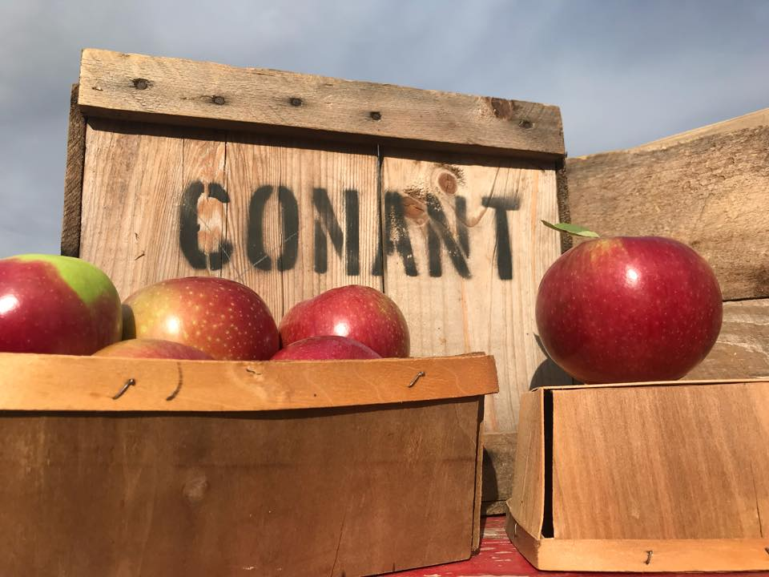

Apple Picking is a MUST-DO Fall activity.
Conants Apple Orchard is one of the most popular places to go. With their fresh apples you can enjoy making candy apples, caramel apples, apple pie, and apple crisp. While your at Conant's make sure you pick up some fresh apple cider:) Their location and hours can be found on their facebook page.
Conant Apple Orchard Facebook